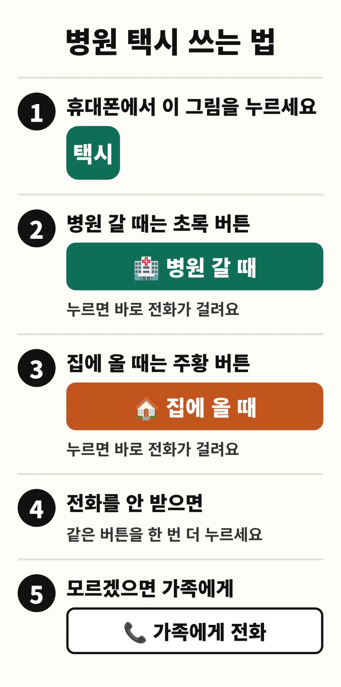
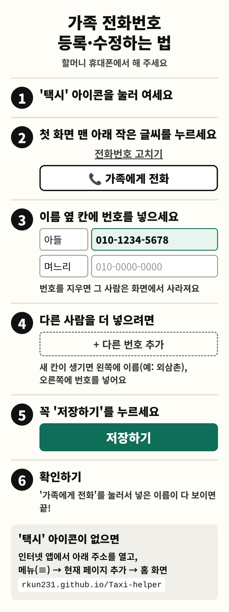

외할머니는 80세가 넘으셨고 휠체어를 타십니다. 눈이 침침하고 스마트폰 조작이 어려우셔서 전화번호를 수첩에 적어두고 한 자리씩 눌러 거셨습니다. 병원에 갈 때와 집에 올 때 부르는 택시 센터도 달랐습니다. 이 두 가지를 큰 버튼 몇 개로 줄인 웹앱을 만들었습니다.
주황색 항목은 할머니나 제가 직접 문제를 발견한 때입니다.
할머니가 장애인(교통약자) 택시를 이용하신다는 걸 알고 알아보니 전남과 광주 모두 지원 대상이었습니다. 두 곳 모두 신청해 드렸습니다.
전남 센터는 하루 전 오전 10시에 예약합니다. 진료가 언제 끝날지 몰라 귀가편 시간을 맞출 수 없어서, 집에 올 때는 출발 1시간 전에 부르는 광주 센터를 쓰기로 했습니다. 두 센터에 직접 전화해 확인했습니다.
할머니는 단축번호를 외우기 어려워 수첩을 보고 번호를 누르셨고, 이제는 갈 때와 올 때 걸 곳까지 다릅니다.
버튼 두 개짜리 웹앱을 만들고 화면을 하나씩 뺐습니다. 10월 16일 지금 형태로 GitHub Pages에 배포하고 할머니 폰 홈 화면에 아이콘으로 넣었습니다.
병원에 자주 가시는 시기가 아니어서 주로 가족에게 전화할 때 쓰셨고, 그 화면의 '처음으로' 버튼이 어렵다고 하셨습니다.
가족에게 전화를 걸면 첫 화면으로 돌아가게 고쳤습니다.
직접 써 보다가 발견했습니다. 두 번 누르면 닫히고, 한 번 누르면 큰 안내가 뜨게 해 달라고 했습니다.
두 기기로 확인하다 발견했습니다. 크롬과 삼성 인터넷 모두에서 15가지 경우를 테스트하라고 기준을 정했습니다.
테스트 30개 통과, 고치기 전 버전에서는 같은 테스트가 실패하는 것까지 확인한 뒤 할머니 폰으로 최종 확인했습니다.
실제 앱과 똑같이 움직이는 체험 화면입니다. 가족 번호는 가짜이고 전화는 걸리지 않습니다. 오른쪽 카드의 '휴대폰에서 보기'를 누르면 그 변화가 휴대폰에 나타납니다.
코드는 AI(Claude)가 썼습니다. 무엇을 넣고 뺄지는 아래처럼 나뉩니다.
| 결정 | 출처 | 결과와 이유 |
|---|
안드로이드의 크롬·삼성 인터넷은 화면을 누르지 않은 상태에서 페이지가 추가한 뒤로가기 기록을 건너뜁니다. 그래서 갤럭시에서만 안내가 뜨지 않았습니다. 같은 15가지 테스트를 고치기 전 버전에도 돌려서, 테스트가 이 문제를 실제로 잡아내는지 확인했습니다.
| # | 경우 | 크롬 | 삼성 인터넷 |
|---|
테스트는 컴퓨터에서 두 브라우저의 휴대폰 환경을 흉내 내 돌렸고, 마지막 확인은 할머니 폰에서 했습니다.
앱 코드는 공개 저장소에 있어서, 가족 번호는 코드에 넣지 않고 할머니 폰의 브라우저 저장소(localStorage)에만 저장합니다. 코드에 있는 번호는 누구에게나 공개된 두 센터 번호뿐입니다. 쓰는 사람(할머니)과 관리하는 사람(가족)이 달라서 설명서도 두 가지로 만들었습니다.


사용 전후 횟수(잘못 건 전화, 가족에게 도움을 청한 횟수)는 11월 중순까지 기록 중입니다.